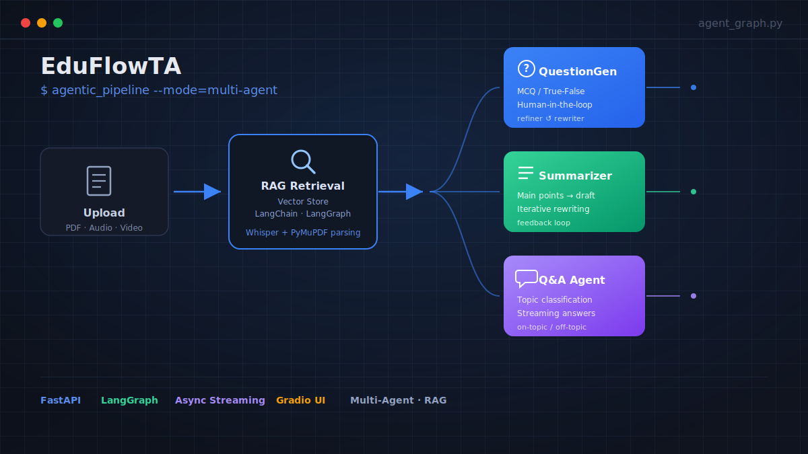
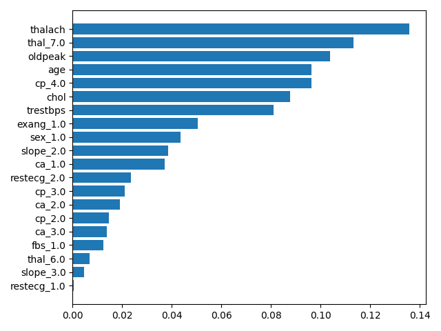
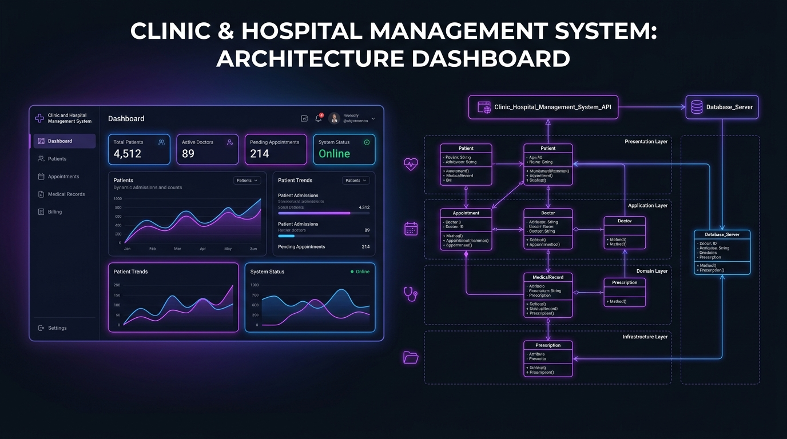

A Computer Science student and aspiring AI & Machine Learning Engineer, focused on Machine Learning, Data Analysis, and Natural Language Processing. I build complete pipelines — from raw data to a working, deployable model — and I'm currently going deeper into LLMs, RAG, and AI agents.
I'm a Computer Science student at Menoufia University (Faculty of Computers and Information), specializing in Machine Learning, Data Analysis, and Natural Language Processing. I like taking a project the full distance — cleaning and exploring the data, engineering features, comparing models properly, tuning them, and then wrapping the result in something people can actually click through, not just a notebook.
I'm currently going deeper into NLP and Large Language Models — LangChain, LangGraph, Retrieval-Augmented Generation (RAG), and fine-tuning — through hands-on training with the NTI Digital Egypt Youth Program, alongside applied work in classical ML and data analysis.
End-to-end projects — from raw data and architectural design to a deployed, working system.

Multi-agent system with specialized agents for question generation, summarization, and feedback-driven refinement, built on a RAG pipeline over course materials with async FastAPI microservices, Whisper transcription, and PyMuPDF parsing. Built as part of a team.
A Flask web app that classifies a newborn's risk level (Healthy / At Risk) from growth and vital-sign data — birth measurements, heart & respiratory rate, oxygen saturation, temperature, feeding, and Apgar score — using a Decision Tree model served through a REST API with a browser-based form.

End-to-end pipeline on clinical data: preprocessing and encoding, PCA and feature selection, four supervised classifiers (Logistic Regression, Decision Tree, Random Forest, SVM) with GridSearch hyperparameter tuning, K-Means for unsupervised exploration, and a Streamlit app for live predictions.

Complete end-to-end management platform engineered using strong Object-Oriented Programming (OOP) principles. Features multi-role access control for doctors, patients, receptionists, admins, and nurses, structured user requirements, and clean software architecture to streamline medical workflow management.
For more implementations:
• School Management System: View on GitHub ↗
• Company Management System: View on GitHub ↗
Looking for more implementations and data analytics projects? Check out my full repository collection on GitHub ↗.